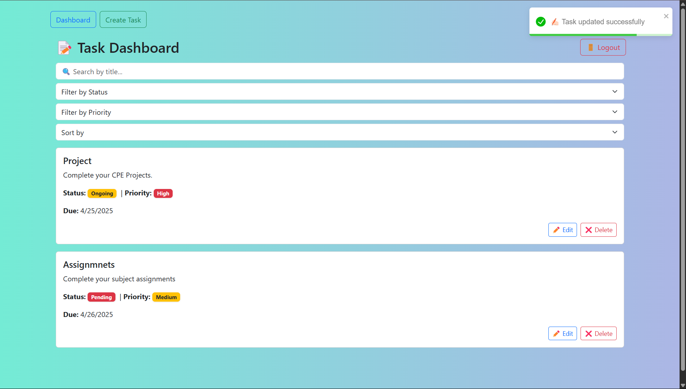

A full-stack web application for organizing, assigning, and tracking tasks efficiently. Frontend: Built with React.js for a responsive and interactive user experience. Features include dynamic task lists, status updates (Pending, In Progress, Completed), and client-side validation. Backend: Developed with Django + Django REST Framework, exposing secure RESTful APIs for task and user management. Authentication: Implemented using dj-rest-auth and Django Allauth, supporting email/OTP verification and token-based session handling. Database: Uses SQLite/PostgreSQL with Django Admin for backend management. Security: Role-based access control and permission-protected API routes ensure that only authorized users can modify tasks.
View on GitHub